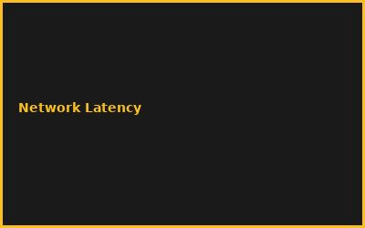
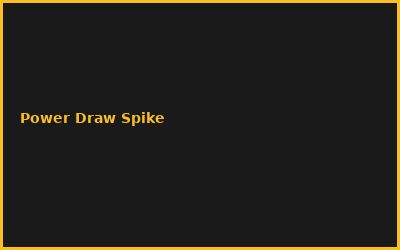

Kapitel 1: Hardware Selection & Assembly
- Jetson Orin Nano/Xavier Selection
- GPU Memory & Bandwidth Specs
- Power Management & Cooling
- Network Interface (WiFi/LoRaWAN)
Kapitel 2: Kubernetes on Edge
# K3s on Jetson Cluster
curl -sfL https://get.k3s.io | sh -
kubectl apply -f edge-deployment.yaml
Kapitel 3: LoRaWAN Integration
- LoRa Gateway Setup (Helium/TTN)
- MQTT Bridge for Sensor Data
- Low-Power Protocol Optimization
- Network Coverage Planning
Kapitel 4: Model Optimization for Edge
- Quantization (INT8 vs FP32)
- Pruning & Distillation
- TensorRT Conversion
- Latency vs Accuracy Tradeoffs
Kapitel 5: Real-Time Inference
- Batch Processing Optimization
- Memory Management Strategies
- Thermal Throttling Mitigation
- Stream Processing Pipelines
Kapitel 6: Deployment & Monitoring
- Over-the-Air (OTA) Updates
- Performance Telemetry Collection
- Edge-to-Cloud Synchronization
- Autonomous Operation & Fallback
💡 PRO-TIPPS
🎯 Tipp: INT8 Quantization ist Key
Problem: FP32 = zu langsam | Lösung: INT8 = 4x schneller, 90% Accuracy
💰 BUDGET-HACKS (80% SPAREN!)
💰 Hack: Jetson Orin Nano Cluster
Original: Enterprise Edge AI System: €50K+ | Hack: 8x Jetson Orin Nano + LoRa: €3K | Einsparnis: 94%
⚠️ FEHLER
❌ Fehler: Thermal Throttling unter Last
Was passiert: Performance Collapse | ✅ Lösung: Proper Heatsink + Active Cooling
🌐 COMMUNITY
NVIDIA Jetson Community, K3s Users, LoRaWAN Alliance, Edge AI Summit
📸 Fehler-Galerie

